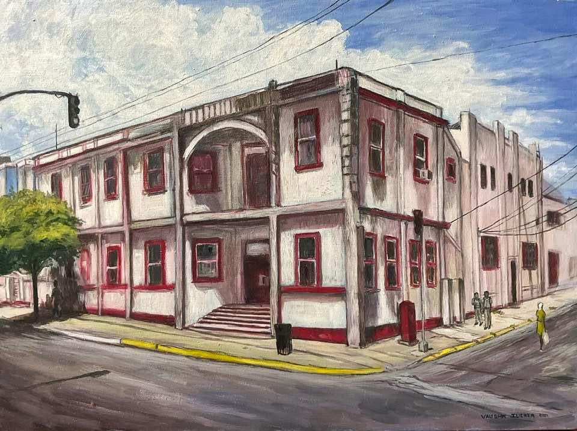
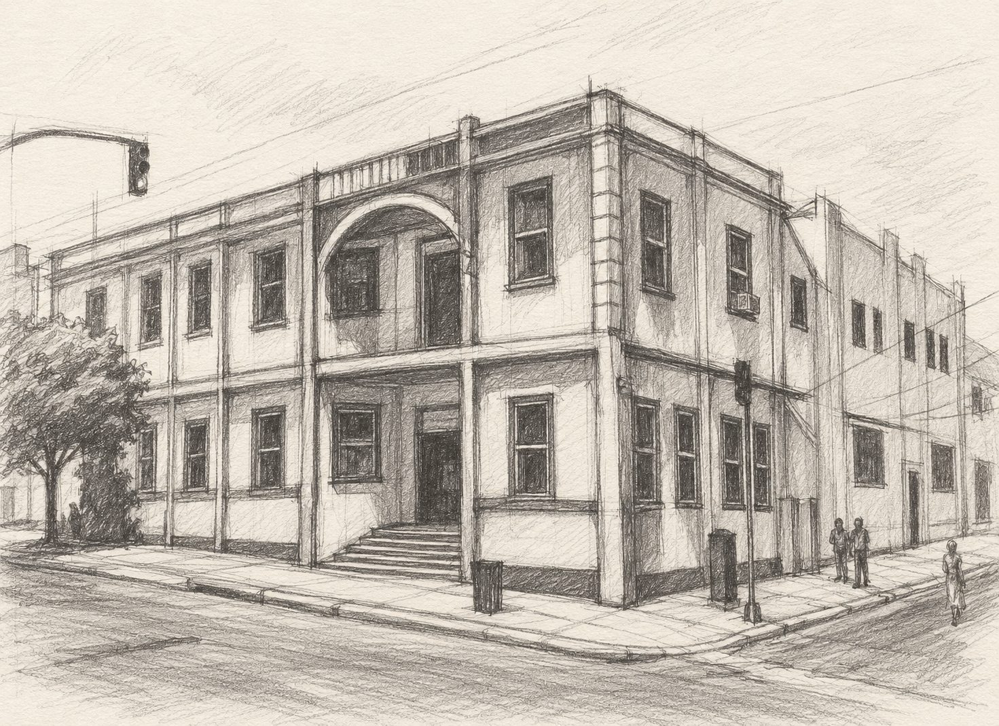

THE DRAWING SCHOOL / FREE GUIDED PROJECT
One building.
Seven ways to see it.
Build Down Town Kingstown from its largest shapes to its smallest decisions. Learn the structure in pencil, then carry it into paint.
0 of 7 checkpoints recorded
Progress stays on this device.

MAKE IT YOURS
Now draw. Then look again.
Use paper or the Drawing Studio. Save your drawing, ask for feedback, and make one focused revision. Your lesson stage and notes can travel with you.
For online critique, upload your own work. An AI first look is available when enabled; a personal critique from Vaughn costs $45.
